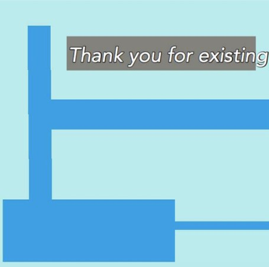
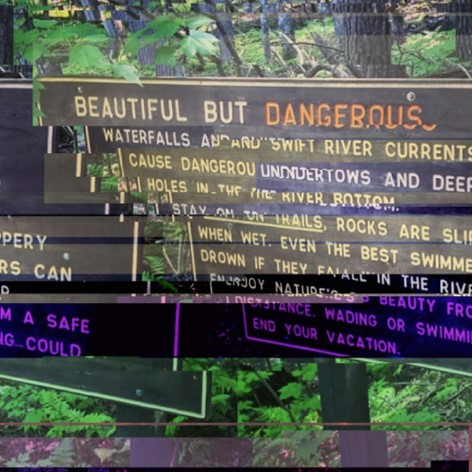
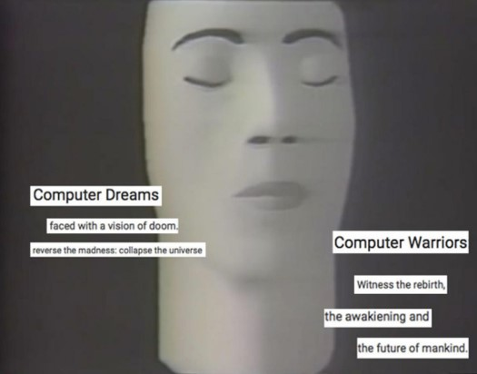

#08 (Paradox)

Thank you :]

Experience the bad things as good things!
...
Fake it till you make it?
more like fake it till you have
no grasp of which parts of you are real
and have to go the rest of your life
with a deep sense of unease.
...
What makes you think I understand
anything about myself?
Venus spins backwards and
the scientists still can't
figure it out why.
Let me tell you something.
Just because it happened in
a dream doesn't make it not real.
Dreams are real life too.
...
In my dreams,
the thing that
looks like you is kinder...
...
It's either I do suffer from
Black and White thinking or
I don't and I definetely do,
there's no doubt about it.

I DON'T HAVE THE MOTIVATION
2 DO THE THINGS I WANT 2 DO
WHICH DOESN'T MAKE SENSE CUZ
SHOULDN'T BE ABLE 2 DO THEM
IF I WANT 2 DO THEM?
...
Depression: I really don't
wanna do any of this stuff
that I really wanna do...
...
Kinda wish I was mysterious
but kinda can't stop talking about myself